In this lab, you will add a Status element to the CommandPanel symbol for displaying quality and status information at runtime. You will observe how the Pending status indicator appears when commands are sent, then configure a font color override for the Pending status style using Galaxy Styles. You will also import additional style libraries, rename them, export them, and finally configure the TitleBarApp to display a style selector dropdown for dynamic style switching at runtime.
Objectives — Upon completion of this lab, you will be able to:
Use the Status element
Override styles using Configure Galaxy Styles
Export Galaxy Styles
Import Galaxy Styles
Use the TitleBarApp to change the active style in a ViewApp at runtime
Add a Status Element to the CommandPanel Symbol
Open the CommandPanel symbol in the Graphic Editor and add a Status element from the Tools pane. Click and drag a small square above the two buttons on the drawing canvas. When you release the mouse, the Edit Animations dialog box appears automatically with the DataStatus animation ready for configuration.
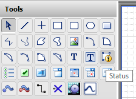
Tools pane — select the Status element tool (target icon with yellow status indicator) to add quality and status display functionality to the symbol.
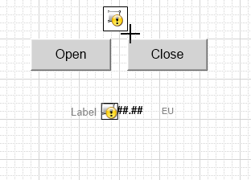
Placing the Status element — click and drag a small square above the buttons on the canvas. The status element appears with a yellow status icon inside.
Configure the DataStatus Animation
In the Edit Animations dialog, the DataStatus animation requires you to select which graphic elements should be affected by the status display. On the Graphics tab, move both Button1 and Button2 from the Available Graphic Elements list to the Selected Graphic Elements list using the >> button. This tells the Status element to monitor and display status information for both buttons.
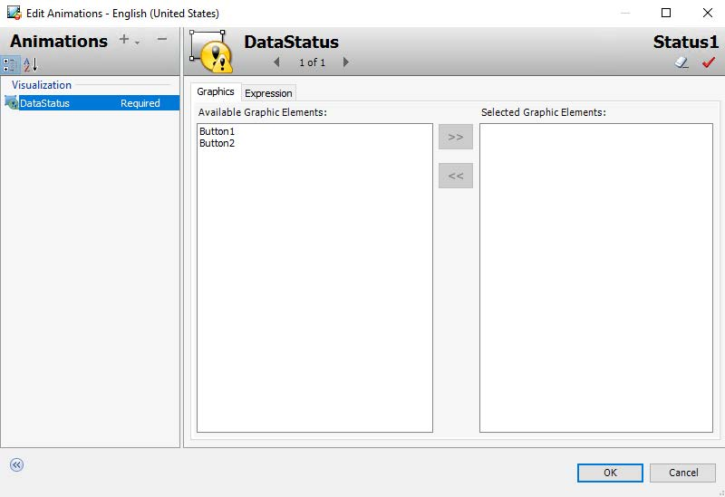
DataStatus animation initial state — the Graphics tab shows Button1 and Button2 in the Available Graphic Elements list. Select each and click >> to move them to the Selected list.
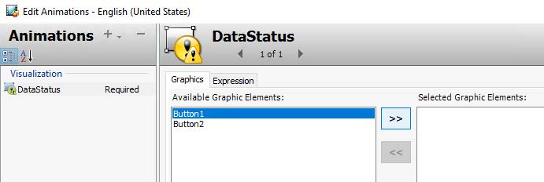
Moving Button1 — select Button1 in the Available list and click the >> button to move it to the Selected Graphic Elements list.
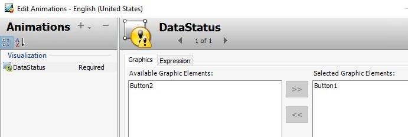
Button1 moved — it now appears in the Selected Graphic Elements list. Repeat the process for Button2.
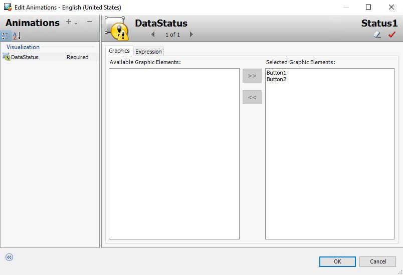
Both buttons selected — Button1 and Button2 are now in the Selected Graphic Elements list. Click OK to close the dialog.
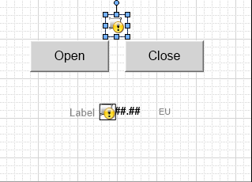
Final canvas state — the status element is positioned above the Open and Close buttons. Save and check in the CommandPanel symbol.
Test Status Display in Preview
Switch to the ViewApp preview session, navigate to Mixer100, and click the Inlet1_001 symbol to open its command panel. Click the buttons and observe the pending status indicator — a yellow hourglass icon appears briefly when you change commands, providing visual feedback that the command is being processed.
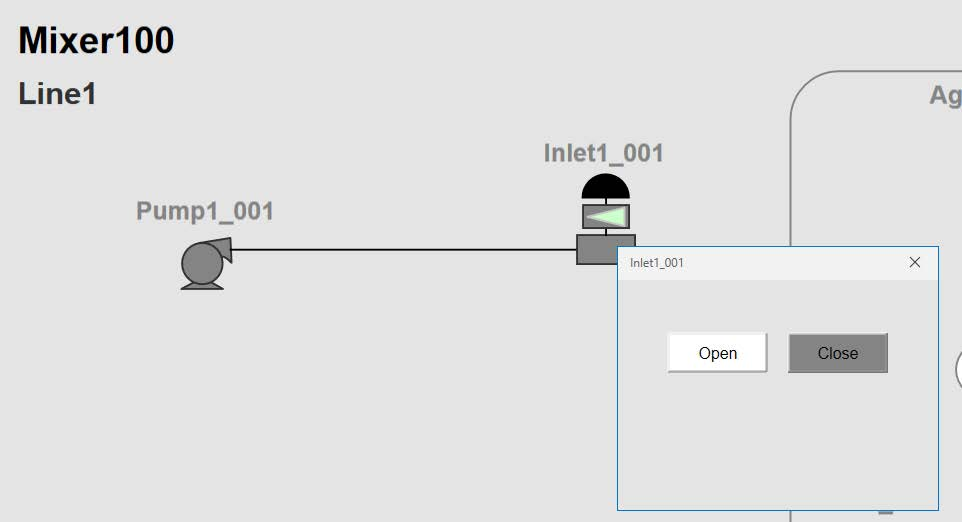
Command panel at runtime — clicking Inlet1_001 opens the command panel with Open and Close buttons. The status element is visible above the buttons.
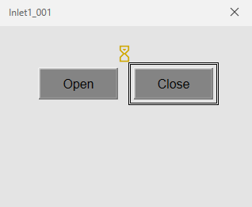
Pending status indicator — after clicking a button, a yellow hourglass icon appears briefly at the top of the command panel, indicating the command is being processed.
Configure Quality and Status Display Override
Open the Galaxy Styles configuration by selecting Configure → Galaxy → Styles from the Galaxy menu. By default, the Standard_Style card is selected. On the Quality & Status tab, double-click the Pending status category (or click its pencil icon) to open the Status style overrides dialog.
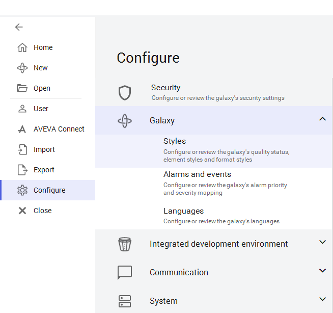
Opening Galaxy Styles — navigate to Galaxy menu → Configure → Galaxy → Styles to access the style configuration area.
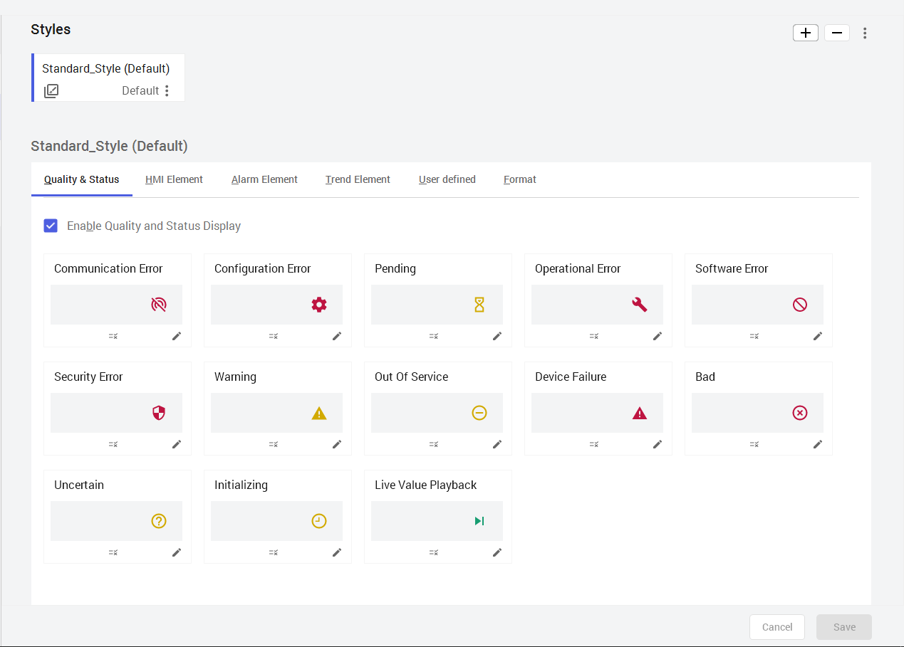
Standard_Style (Default) — the Quality & Status tab shows all 13 status categories. Double-click Pending to edit its visual override.
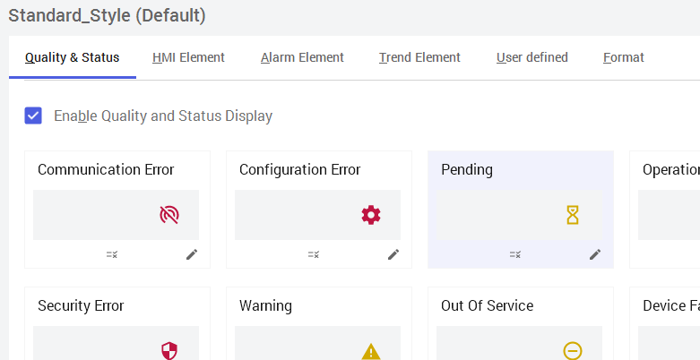
Pending status card — highlighted in the status grid. Double-click it or click the pencil icon to open the style overrides dialog.
Override Font Color for Pending Status
The Status style overrides dialog opens with the Text tab active. Check the Font color override checkbox and click the color selector to open the Select Font Color dialog. On the Solid Color tab, select light yellow from the Standard Palette. Click OK to confirm, then click Apply to close the overrides dialog.
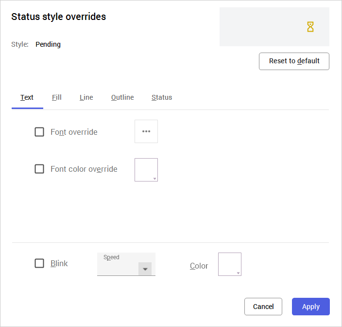
Status style overrides — Pending status. The Text tab shows Font override, Font color override, and Blink settings. Check Font color override to enable color customization.
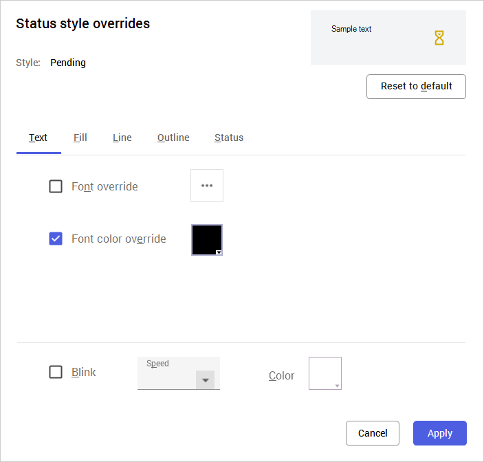
Font color override enabled — check the checkbox, then click the color selector square to open the color picker dialog.
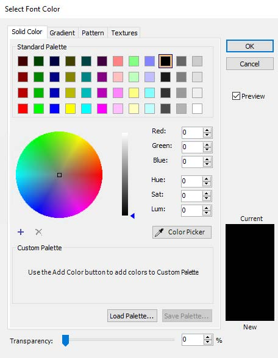
Select Font Color dialog — the Solid Color tab displays a Standard Palette grid of preset colors. Select light yellow for the Pending status text.
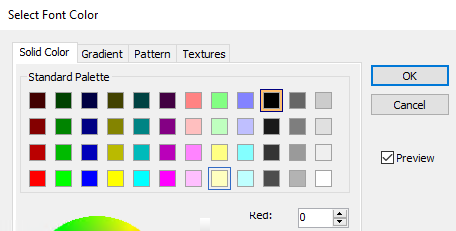
Light yellow selected — RGB values 255, 255, 191. The New preview area shows the selected color. Click OK to confirm.
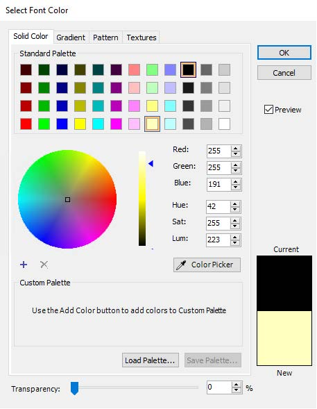
Color confirmed — light yellow is shown in the New preview area. The Current color remains black for comparison.
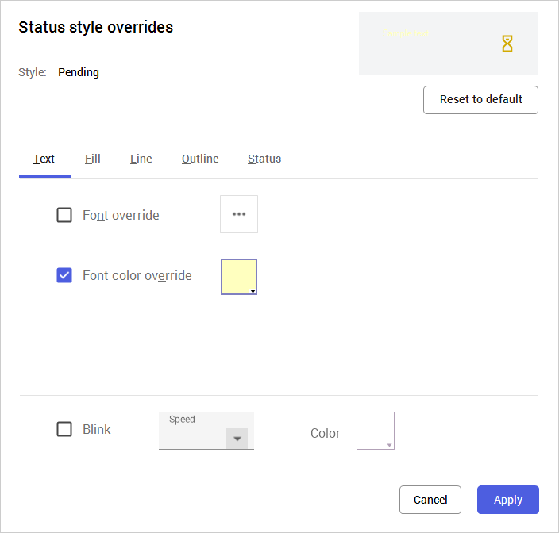
Font color override updated — the Pending status now shows a yellow color swatch. Click Apply to save the override.
Save Style Changes
After clicking Apply, a changes pending icon appears on the Pending style card, and the Save button becomes enabled. Click Save to commit the style override. The pending icon disappears, confirming the changes are saved.
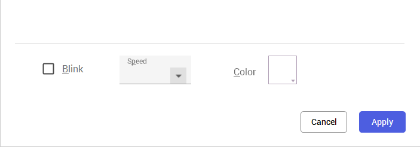
Changes pending — after clicking Apply, the Pending card shows a changes pending icon and the Save button becomes active. Click Save to commit.
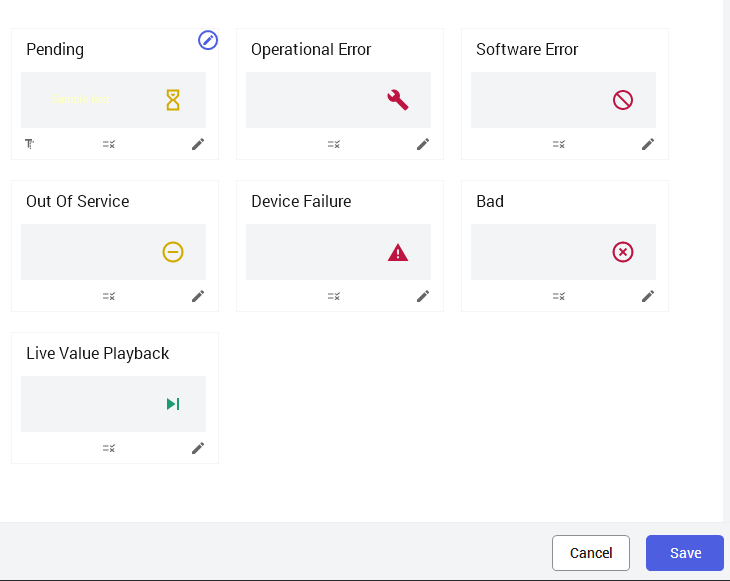
Style saved — the changes pending icon disappears and the Save button becomes disabled, confirming the override is committed.
Verify Style Override in Runtime
Return to the ViewApp preview session and click the Inlet1_001 symbol. Click the buttons and observe that the pending status indicator now appears with light yellow text, matching the style override you configured. The text on the buttons changes to light yellow while the quality is confirmed, then reverts once the pending status is removed.
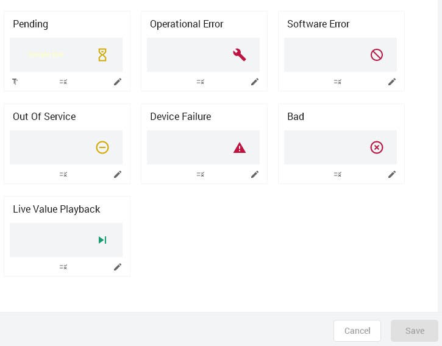
Saved styles grid — all status cards are displayed without pending icons, confirming changes are saved.
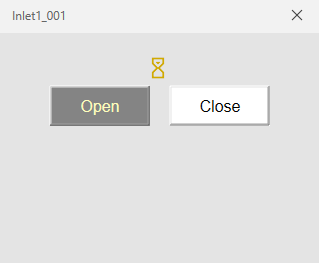
Pending status with color override — the command panel shows the yellow hourglass icon and button text changes to light yellow during the pending state.
Manage Galaxy Style Libraries
Now import additional style libraries, rename them, and export all styles. Open Galaxy Styles, click the ellipsis button, and select Import. Navigate to C:\Program Files (x86)\ArchestrA\Framework\Bin\AdditionalElementStyles and select all the XML style files.
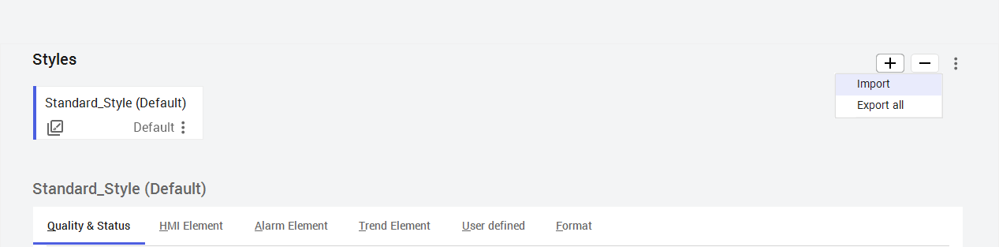
Import styles — click the ellipsis button and select Import to open the file browser.
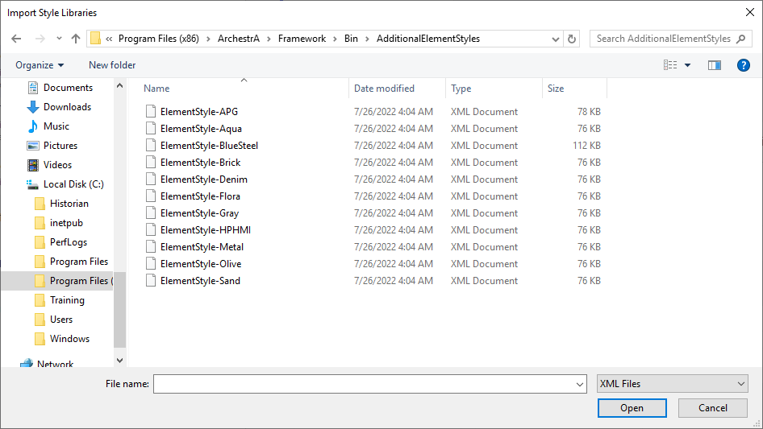
Import Style Libraries — navigate to the AdditionalElementStyles folder containing predefined style XML files.
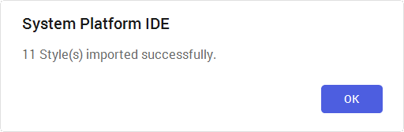
Import successful — 11 styles imported. New cards appear with blue dots indicating pending changes.
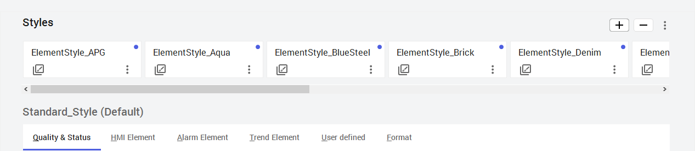
Imported style cards — the new cards appear with the ElementStyle_ prefix. Blue dots indicate unsaved changes.
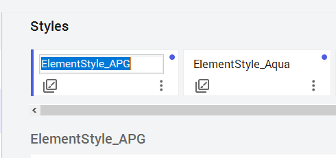
Renaming a style card — click on the ElementStyle_APG name to make it editable. Remove the prefix to rename it to "APG".
Rename and Export Styles
Remove the ElementStyle_ prefix from each imported card name. Rename ElementStyle_APG to APG, ElementStyle_Aqua to Aqua, and so on. Do not rename Standard_Style. After renaming all cards, click Save, then use the ellipsis menu to select Export All.
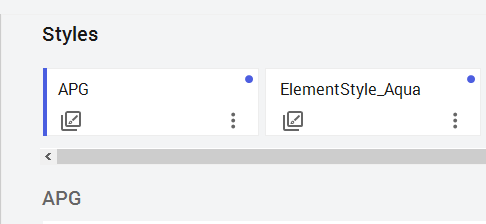
Renamed to APG — the ElementStyle_ prefix has been removed. Repeat for all imported cards.
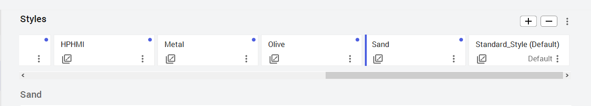
All styles renamed — HPHMI, Metal, Olive, Sand, and Standard_Style (Default) are visible at the end of the list.
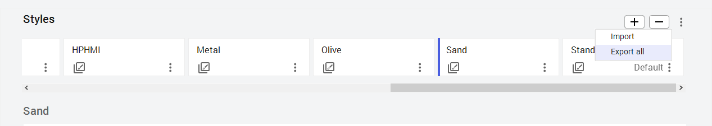
Export All — click the ellipsis and select Export All to export all style cards to XML format.
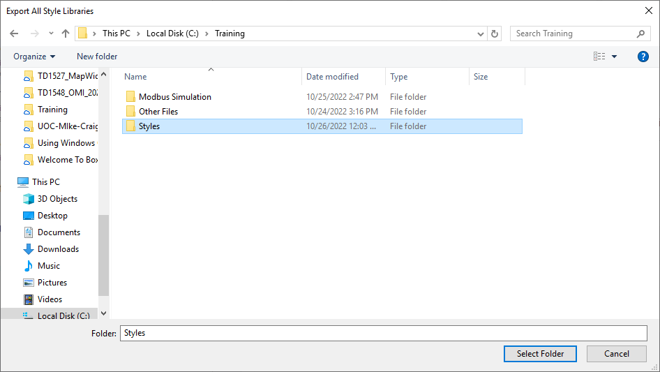
Export destination — navigate to C:\Training, create a Styles folder, and click Select Folder to export.
Export successful — 12 styles exported to C:\Training\Styles.
Update Element Styles at Runtime
Enable dynamic style switching by opening the Main layout in the Layout Editor, selecting the TitleBarApp (Pane4), and changing the Content and Display Area → Style Libraries property to SecondaryRight. Save, close, and check in the layout.
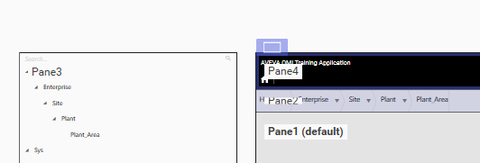
Layout Editor — Pane4 (TitleBarApp) selected in the layout hierarchy. This element will display the style selector button.
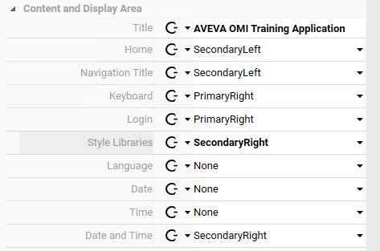
Style Libraries property — set to SecondaryRight to place the style selector on the right side of the second title bar row.
Test Dynamic Style Switching
Start the preview session and navigate to Mixer100. Notice the style selection button on the title bar displaying "Standard_Style". Click it to reveal a dropdown of all available styles, then select a different style (e.g., Aqua) to see the entire ViewApp change its visual theme dynamically.
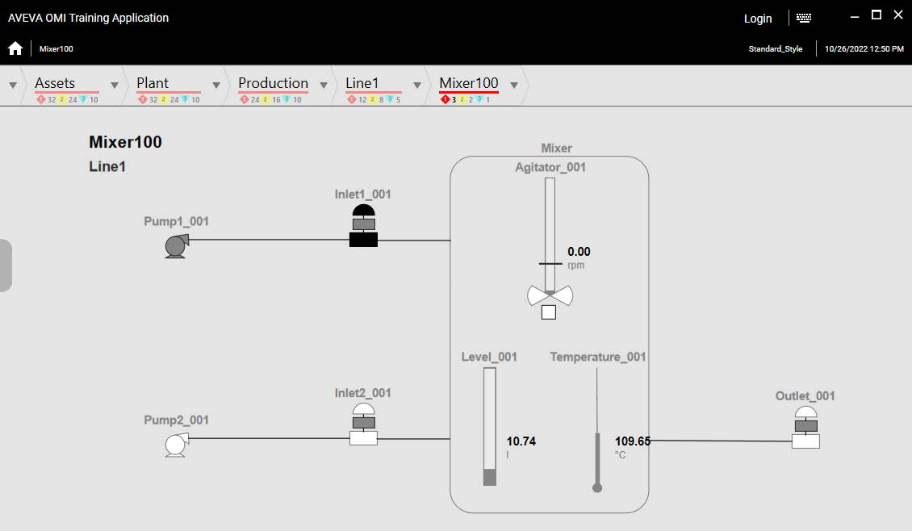
Style selector on title bar — the Standard_Style button appears on the right side of the second title bar row.
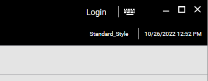
Style button location — click it to open the style selection dropdown.
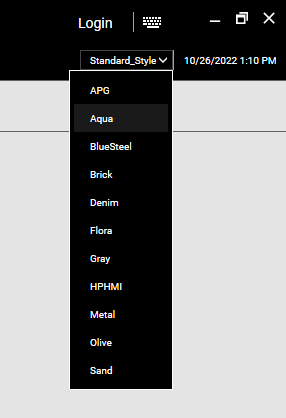
Style selection dropdown — all imported styles appear. Select Aqua to change the active style. The ViewApp colors update immediately.
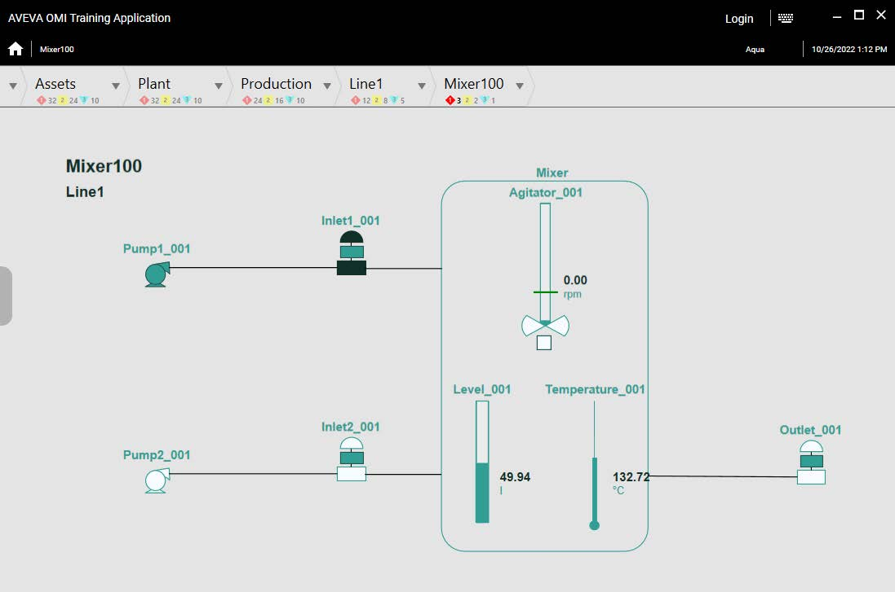
Aqua style applied — the entire ViewApp changes to a blue/teal color scheme. The selector now shows "Aqua" as active.
Tip: You can leave your favorite style selected or switch back to Standard_Style. The screenshots in the rest of the course reflect Standard_Style.
📝 Knowledge Check
Q1: What does the Status element do in a symbol?
The Status element displays quality and status information at runtime. It monitors selected graphic elements and shows status indicators (like the Pending hourglass) when commands are being processed.
Q2: How do you override the font color for a specific status style?
Open Configure → Galaxy → Styles, double-click the desired status category on the Quality & Status tab, check Font color override on the Text tab, choose a color, then Apply and Save.
Q3: Where are additional predefined style libraries located?
At C:\Program Files (x86)\ArchestrA\Framework\Bin\AdditionalElementStyles — containing XML files for styles like APG, Aqua, BlueSteel, Brick, Denim, Flora, Grey, HPHMI, Metal, Olive, and Sand.
Q4: How do you enable the style selector on the ViewApp title bar?
Set the TitleBarApp's Content and Display Area → Style Libraries property to a title bar position (e.g., SecondaryRight). This adds a clickable style name button that opens a dropdown of available styles.
Q5: What happens to the button text when the Pending status is active after the style override?
The button text changes to light yellow while the quality is being confirmed (pending state), then reverts to the original text color once the pending status is removed and quality is confirmed.